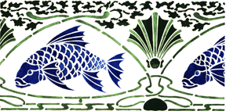
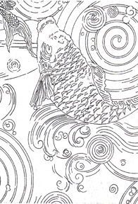
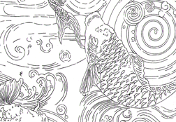

|
Click here to see a larger image of this curtain |
Japanese Carp Lace Curtains Our finest weave, this 14-point lace has exceptional delicacy in the weight of the fabric and in the design. The pattern is adapted from the Candace Wheeler printed fabric of the same motif, which comes to Burrows & Company from the archive of the Mark Twain Memorial in Hartford, Connecticut. Available sizes: 50 x 54" = $104 Colors (product codes) Ecru (LCE-115) Fabric Content: 95% cotton/5% polyester *All sizes are approximate, with a 3% allowable variance. There may be additional shrinkage after washing. A coordinating "Japanese Carp" lace shower curtain will also be available in 2001. |
The Carp Stencil This lively pattern was originally published by Candace Wheeler in the early 1900's as a design for a bathroom stencil. It is a two piece stencil, which allows for mixing shades and colors in the paints. The print shown here has two greens in the surround and the shell, and two blues used on the fish itself, with an effort made to maintain variety of tones from one application to the next. This stencil has also been effectively painted using just one color with different shading to highlight the figures. To achieve an artistic result, we suggest experimenting first with colors on posterboard before starting to work on the walls. |
 The Carp Stencil is currently out of stock |
Japanese Carp Wallpaper |
|
|
Japanese Carp on Linen Union Width: 54" Repeat: 23 1/2" Price: Please call to inquire on cost per yard. Color: indigo print on white cloth
|
 |
|
 |
Japanese Carp on Denim: |
Return to the Candace Wheeler Designs Page
Go to J.R. Burrows & Company Main Page